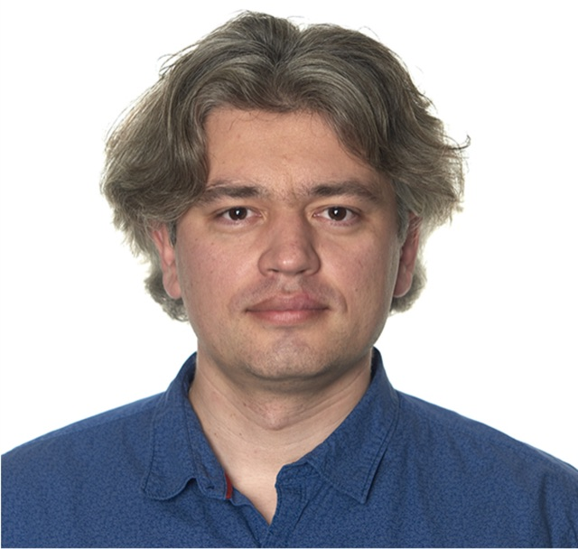

Yury Koush, Ph.D.
Associate Professor
Brief Bio.
Yury Koush leads the Neuroimaging and Cognitive Neuroscience Laboratory at the Vladimir Zelman Center for Neurobiology and Brain Rehabilitation, Skolkovo Institute of Science and Technology (Skoltech).
His research focuses on real-time functional MRI, neurofeedback, and multimodal neuroimaging connectivity analysis. The laboratory studies brain network dynamics, emotion regulation, and social perception, and develops open-source tools for real-time neuroimaging, including OpenNFT and pyOpenNFT.